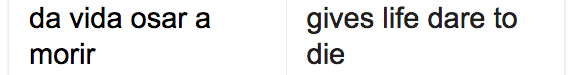

To have heard all the speech in the nutmeat / on the boar’s breath.
To have heard all the speech in the nutmeat / on the boar’s breath. (35)
Meat thinking up neat machines. Intelligent activity. Snout and scout. Pigs and cowls. The initial part of Ken Babstock's On Malice (Coach House Books 2014) is an extended sonnet sequence titled SIGINT, the term being defined loosely as “intelligence-gathering by the interception of signals” be they electronic or polyphonic - and the signals are both here. The title also leans towards the notion of signification, the creation of and reception of meaning(s), while yet remaining decidedly separate from it. The allusion may be overdetermined, but in this case the word is a sort of malicious misprision.
If one is interested in an inquiry into this sonnet sequence, I recommend Kevin McNeilly's review All Good Possibles: Ken Babstock, On Malice.
This piece will focus less on SIGINT, the first poem of the book and what Kevin's review mostly touches on, and more on FIVE EYES, the final poem of the work. The title of the poem continues to theme of SIGINT in its reference to the Five Eyes intelligence alliance. This piece supposedly "restricts itself to vocabulary mined from John Donne’s essay ‘Biathanatos.’ Written in 1608 late in the poet’s life and after his ordination, and published posthumously in 1647, it is a philosophical and theological defence of suicide.” (Notes, 93). But this restriction ("the anus constricts" (19, 33) ) does not place the work in the realm of oulipo, nor is it outwardly conceptual. This additional conceptual, contextual information doesn't considerably add to its 'thinkership' - it reads just fine, even fascinatingly, elsewise. Just so, this contextual information is instead tauntingly conceptual. This information regarding the composition of the poem is Borgesian in its suggestion, revealing little to nothing about the significance or occasion of this constraint. Babstock's poetic mediation of the source text is a "repurposing" of it - the word ostensibly spoken by a Benjaminian figure in SIGINT (a poem also composed from a source-text, in this case, Benjamin's records of his son's language acquisition) (49, 93) - but to what end?
Nonetheless, providing these ambiguous "Notes" at the close of the book is in perfect alignment with the problems posed by the praxis of SIGINT in general; that is, how are we to interpret information of any kind? How does information change upon its interpretation? What do we do with data? What are the political implications of these considerations? How does Benjamin consider information again? "The value of information does not survive the moment in which it was new." (Illuminations, 90). Right. Let's think about that.
K it in ) in it a ,• a it is by * it, j i $d J. I. t. |j, A't ^ by it U is $ in is, it in it, 7+ 4 In Pufu authorised. j And by lUtv'mctt- tainc cases.. iDt kg. 9. a keeper, if his prisoner kill himselfc* prejudice
As readers, we often play our own SIGINT roles - attempting to intercept signals from a poem - attempting to decode its always unstable meanings. Uncertainty often becomes a kind of background noise. On Malice makes it an engulfing texture.
Or maybe my entire premise is wrong here - perhaps I just haven't read Donne close enough and am missing the "meaning" of the poem. Also, the above and following textual collisions are the result of copypasting a pdf version of Biathanatos into a text-editor. This kind of translation corrupts the original, or rather more interestingly, the digitization software used, the Optical Character Recognition imposes its own translation of 17th Century manuscript. Mining this translation would provide a markedly different poem than the one Babstock has rendered in dern.
c a : of it in in $ in in in so it ic is is it it, is (
These "translations" are meant to "supplement" (the word repeats throughout SIGINT) Babstock's more poetical ones. Their source-text is identical, but their mediation is markedly different. How information is created, stored, and accesssed indelibly effects its meaning; this process is what Friedrich Kittler calls a "discourse-network", record keeping, or "writing systems". This is mostly simply because information is born of material conditions which effect how it will/can be stored and how it will/can be interacted with. These various materials and processes affect our experience of such information, how it is accessed, received etc. be it script, speech, or digitized materials. Imagine if this was speech.
Obviously our material conditions have shifted since the 1600's, and so too have our "discourse networks". Look at how this text was originally published (but remember that even here it is being looked at through the lens of a digital translation):
and but look who archives it:
Directly copypasting the Latin text above (thanks to Optical Character Recognition technology) there results in, by the way, according to our translator, our archivist, our digitist:
Let's look at a word which occurs only once with Donne's Biathanatos and FIVE EYES: authorizing. The word is peculiar in its adjectival and verbal sense. It also invites questions of authority: who has it and where does it come from? Who authenticates authority, or how do the authorities attempt to authenticate themselves? It relates particularly to SIGINT and poetry - how do we know what a poem means? How do we authorize an interpretation of its signals? Who can authoritatively speak to poetry? Is the author really such? Or what is an author who repurposes existing texts as Babstock tends to do in this collection?
feflc my self Maister curious science,
and because the r.its are obscure, and steepy,
and and narrow,and every errourdead- slippery,
4y, except where competent diliigence being fore-used, mistaking our conscience may
provide an ceruse.
In Babstock, the phrase appears in the strophe "Purpose steps toward the self-authorizing / death. Skin / for condemned skin." (88). In Donne its appearance is: "As Lavs against Day-tbeeves may be deduced from the Law of God authorizing Brinces" (14). The former's hyphenation is a noticeable addition - and loosens up Babstock's imposed constraint. It shows that while the text is perhaps limited to Donne's words, the combination and recombination of these words is allowable. Such authorial intrusions, in other words, are fair game, are licensed (by the author, of course). Nonetheless, this "review" takes the form of a "self-authorizing / death" in its earnest use of a corrupt pdf translation, comparing text "with condemned" text (Babstock 88).
kandlinge
"I copy absences, and do my shifts at the scope" writes Babstock, ventriloquizing Donne (87). I cannot find the plural form of the word "absences" in my corrupted pdf, however. And it does not appear even with some sort of strange textual corruption that would suggest plurality either. Digitization flattens, homogenizes, nouns things, it would appear (as on a surface). The word's absence of course, points to the presence of Babstock's constraint and its successes or slippages. I'm not calling out Babstock if he added an 's' either: If we aren't sure of a sentence, can we be so sure of a word? If anything, I'm attempting to adumbrate how different discourse networks materialize content.
The poem concludes with the Latin phrase "Cetera desunt": the rest is missing. Likewise goes for any interpretation of any signal, of any poem. Such things are always fragmentary, constellatory, incomplete. Translation might always be a kind of interception. Take Donne's Biathanatos for example. This poem is going somewhere, operating within different archival systems over centuries, translating into digital formats regardless of mine or Babstock's interventions. In this sense, both of our translations are interceptions into its content or its materiality at the time of our assay. It's an attempt to hear the "speech in the nutmeat / on the boar's breath" (35). The "nutmeat", however, in these cases is a discourse network.